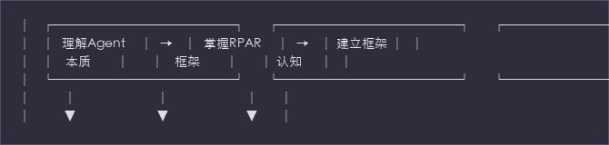
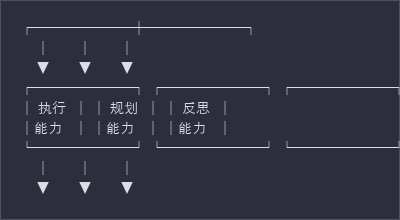
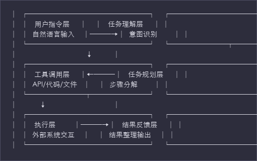
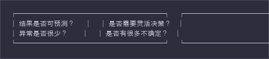
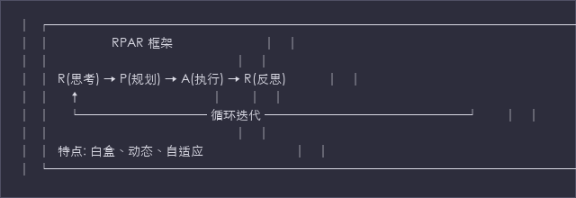
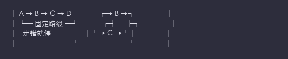

课时1: Agent本质与RPAR框架
时长: 40分钟
主题: 深挖Agent内核，建立RPAR认知框架
目标字数: 8,000字
1. 引入 (15分钟)
1.1 承接上午与开场引导
讲解要点
承接上午: - 上午专家讲了Agent的发展历程 - 从技术演进到产业应用 - 现在我们要深挖：Agent的内核是什么？
核心问题抛出:
"Agent与传统AI应用的本质差别是什么？"
答案预告: - 不是能力更强 - 不是知识更多 - 而是"能执行" + "能自主规划"
开场引导问题（引发思考）
在进入正式内容之前，让我们先通过几个问题来引发思考：
问题1: "你们单位现在用的大模型应用，比如智能客服、知识问答，它们能做什么？"
预期学员回答: 回答问题、查资料、给建议...
问题2: "那它们能直接帮你们操作业务系统吗？能直接生成报表吗？能自动发送通知吗？"
预期学员回答: 不能，需要人工操作...
问题3: "如果有一个AI，不仅能回答'如何查询用电数据'，还能直接登录系统、执行查询、整理结果、生成报告，你们觉得价值差多少？"
讲师引导: 这就是我们今天要讲的Agent——从"动口"到"动手"的本质跨越。
问题4: "Workflow工作流也能自动执行，那和Agent有什么差别？为什么Workflow处理不了复杂情况？"
预期学员回答: Workflow是固定的，不能应变...
问题5: "你们觉得电力行业最复杂的场景是什么？故障诊断？投资决策？这些场景AI能怎么处理？"
讲师引导: 这些复杂场景正是Agent的用武之地，后面我们会详细讲。
学员互动设计
互动环节1：举手表决 (2分钟)
"请大家举手，你们单位现在用的大模型应用，是能直接执行操作的请举手，只能回答问题的请举手。"
目的: 让学员意识到当前应用的局限性，建立需求感。
互动环节2：小组讨论 (3分钟)
"请前后左右的同事讨论2分钟：如果AI能直接帮你们完成一项工作，你们最希望是哪一项？为什么？"
目的: 建立场景关联，让课程内容与学员实际工作产生连接。
互动环节3：分享与记录 (2分钟)
"请2-3位同事分享一下，我会把有价值的场景记下来，今天课程中会用这些场景做案例。"
讲师记录要点: 将学员提到的场景分类（查询类、分析类、操作类），在后续讲解中引用。
1.2 课程目标可视化
课程目标图表

学习路径: 1. 起点: 了解传统AI应用的局限性 2. 中段: 掌握Agent的三大核心能力（执行、规划、反思） 3. 终点: 建立RPAR认知框架，为后续课程打下基础
课程结构预览
课时1 (40分钟)
├── 引入 (15分钟)
│ ├── 开场引导问题
│ ├── 学员互动
│ └── 课程目标可视化
├── Agent vs 传统AI (10分钟)
│ ├── 传统AI应用的特点
│ ├── Agent的核心能力
│ └── 3个电力行业对比案例
├── Workflow vs Agentic (10分钟)
│ ├── Workflow的局限性
│ ├── Agentic的突破性
│ └── 3个类比说明
└── RPAR框架详解 (5分钟)
├── RPAR四环节
└── 电力行业案例走查
1.3 电力行业价值说明
为什么电力行业需要Agent？
行业痛点分析:
痛点1: 数据分散，查询繁琐
用电数据分散在营销系统、生产系统、GIS系统等多个平台。查一个完整数据需要登录多个系统、导出Excel、手动整合。
Agent价值: 自动跨系统查询、智能整合、一键生成报告
痛点2: 故障诊断，依赖经验
设备故障诊断依赖老师傅经验，年轻员工缺乏系统性培训材料，故障处理时间长。
Agent价值: 基于知识库和历史案例，自动推理诊断路径，辅助快速定位故障
痛点3: 投资分析，数据复杂
投资效益分析涉及多维度数据（投资额、进度、收益、对比基准），人工分析效率低、易出错。
Agent价值: 自动采集数据、多维度分析、可视化呈现、智能建议
痛点4: 报表生成，重复劳动
月度、季度、年度报表格式固定，但需要反复查询数据、填入模板、格式调整。
Agent价值: 定时自动执行、模板化生成、质量检查、自动分发
课程价值承诺
"今天这40分钟，你们将掌握Agent的本质认知。回去之后，你们能够： 1. 识别哪些场景适合用Agent，哪些不适合 2. 理解Agent与传统AI、Workflow的根本差别 3. 建立RPAR框架的思维模式，为明天的实操打下基础"
讲师话术示例（引入部分，约300字）
开场白:
"上午我们听了Agent的发展史，看到了从技术演进到产业应用的全过程。但我想问大家一个问题：Agent和你们现在用的大模型应用，比如智能客服、知识库问答，本质差别到底是什么？是更聪明吗？是知识更多吗？都不是。
让我们做个小调查。你们单位现在用的AI应用，能直接帮你们操作业务系统的请举手... 只能回答问题、给建议的请举手... 看到了吗？这就是现状——AI还是'顾问'，只能动口，不能动手。
但Agent不一样。Agent是'助手'，不仅告诉你怎么做，还直接帮你做完。这就是我们今天要解决的核心问题：Agent的本质是什么？为什么它能从'动口'到'动手'？
今天这120分钟，我们只解决一个问题：Agent的内核——RPAR框架。这是你们明天在灵知平台上实操的理论基础。"
白板/板书建议
顶部大字:
┌──────────────────────────────────┐
│ Agent的本质 = 执行 + 规划 + 反思 │
└──────────────────────────────────┘
左侧列表:
课程目标：
✓ 理解Agent本质
✓ 掌握RPAR框架
✓ 建立认知体系
右侧留空: 记录学员分享的场景案例
2. Agent vs 传统AI (10分钟)
2.1 传统大模型应用的特点
交互模式
传统AI应用的交互模式: 一问一答
用户: "如何查询成都高新区的用电数据？"
AI: "您可以按照以下步骤操作：
1. 登录营销系统
2. 进入数据查询模块
3. 选择区域：成都高新区
4. 选择时间范围
5. 点击查询按钮
6. 导出Excel文件"
特点分析: - ✅ 给出了详细的操作步骤 - ❌ 需要用户手动执行每一步 - ❌ 如果系统界面变化，步骤可能失效 - ❌ 用户需要具备操作能力
能力范围
传统AI的能力边界:
| 能力 | 支持情况 | 说明 |
|---|---|---|
| 回答问题 | ✅ | 基于训练知识回答 |
| 提供建议 | ✅ | 给出操作建议 |
| 生成内容 | ✅ | 文本、代码、图片 |
| 执行操作 | ❌ | 无法调用外部系统 |
| 自主决策 | ❌ | 无法根据情况调整 |
| 持续迭代 | ❌ | 单次交互，无记忆 |
完成度分析
传统AI的完成度: "告诉你怎么做，但不帮你做"
价值维度: - 信息价值: 高 —— 提供准确的信息和建议 - 执行价值: 低 —— 需要人工执行 - 时间价值: 中 —— 节省信息查找时间，但不节省执行时间 - 体验价值: 中 —— 交互简单，但不够智能
2.2 Agent的核心能力
交互模式
Agent的交互模式: 多轮自主交互
用户: "帮我查一下成都高新区上周的用电数据"
Agent: "好的，我来为您查询。"
[Agent自动登录系统...]
[Agent选择区域：成都高新区...]
[Agent选择时间范围...]
[Agent执行查询...]
[Agent整理数据...]
Agent: "查询完成。成都高新区上周用电数据如下：
- 总用电量：12,345 MWh
- 同比上周：+3.2%
- 峰值负荷：2,100 MW
详细报告已保存，需要我生成分析报告吗？"
特点分析: - ✅ 直接执行操作，无需人工干预 - ✅ 能理解复杂指令，分解任务 - ✅ 能处理异常情况，自主调整 - ✅ 持续交互，直到任务完成
核心能力三角

执行能力: - 调用API、执行代码、操作文件 - 与外部系统交互 - 直接产生结果
规划能力: - 理解复杂任务 - 分解为可执行的步骤 - 动态调整执行顺序
反思能力: - 评估执行结果 - 识别错误和问题 - 调整策略重新执行
完成度分析
Agent的完成度: "直接帮你做完"
价值维度: - 信息价值: 高 —— 同样提供准确信息 - 执行价值: 高 —— 直接执行操作 - 时间价值: 高 —— 节省信息和执行时间 - 体验价值: 高 —— 智能交互，自然语言对话
2.3 对比表
| 维度 | 传统AI应用 | Agent |
|---|---|---|
| 交互模式 | 单轮对话 | 多轮自主交互 |
| 执行能力 | ❌ 只给建议 | ✅ 直接执行 |
| 完成度 | "你应该..." | "已完成" |
| 任务分解 | ❌ 需要人分解 | ✅ 自动分解 |
| 异常处理 | ❌ 无法处理 | ✅ 自主调整 |
| 持续迭代 | ❌ 单次交互 | ✅ 多轮循环 |
| 价值类型 | 信息价值 | 结果价值 |
2.4 电力行业案例对比
案例1: 查询用电数据场景
场景描述:
领导要求："查一下成都高新区上个月的用电情况，对比一下前几个月的趋势"
传统AI应用的处理方式:
用户: "查一下成都高新区上个月的用电情况，对比一下前几个月的趋势"
AI回答:
"您可以按以下步骤查询：
1. 登录营销管理系统
2. 进入'数据查询' → '用电统计'
3. 选择区域：成都高新区
4. 选择时间：2024年2月
5. 导出数据
6. 重复步骤4-5，分别导出1月、12月的数据
7. 在Excel中制作趋势对比图表
注意：您需要有营销系统的查询权限。"
【结果】用户收到操作指南，需要手动执行约15-20分钟的操作
Agent的处理方式:
用户: "查一下成都高新区上个月的用电情况，对比一下前几个月的趋势"
Agent:
"好的，我来为您查询成都高新区近3个月的用电数据并生成趋势分析。"
[Round 1 - 思考]
Thought: 用户需要成都高新区近3个月的用电数据对比。需要查询2月、1月、12月的数据。
[Round 1 - 执行]
Action: 调用query_electricity_data API
Parameters: {region: "成都高新区", months: ["2024-02", "2024-01", "2023-12"]}
[Round 1 - 观察]
Observation: 获取到3个月的数据，包含用电量、峰值负荷、用户数等
[Round 2 - 思考]
Thought: 数据已获取，需要计算环比变化率并生成趋势图表
[Round 2 - 执行]
Action: 调用analyze_trend函数 + generate_chart函数
[Round 2 - 观察]
Observation: 分析完成，图表生成
[Round 3 - 思考]
Thought: 可以生成完整的分析报告了
[Round 3 - 执行]
Action: 生成Markdown格式报告
Agent回答:
"查询完成！成都高新区近3个月用电情况分析如下：
📊 用电数据对比
• 2024年2月：12,345 MWh（环比 +3.2%）
• 2024年1月：11,956 MWh（环比 -5.8%）
• 2023年12月：12,691 MWh
📈 趋势分析
• 整体趋势：春节影响1月下降，2月恢复增长
• 峰值负荷：2,100 MW（出现在2月15日）
• 用户增长：新增用户 234 户
📄 详细报告已生成：高新区用电分析报告_202403.pdf
📊 趋势图表已保存：trend_chart.png
是否需要我进一步分析某个具体方面？"
【结果】用户直接收到完整的分析报告和图表，耗时约30秒
对比总结:
| 对比项 | 传统AI | Agent |
|---|---|---|
| 用户操作 | 需要执行7步 | 0步，直接接收结果 |
| 耗时 | 15-20分钟 | 30秒 |
| 出错概率 | 高（人工操作） | 低（自动执行） |
| 输出质量 | 依赖用户Excel技能 | 专业图表和分析 |
| 体验 | 学习成本 | 自然语言交互 |
时间效率对比数据: - 传统方式：15-20分钟 - Agent方式：30秒 - 效率提升：30-40倍
案例2: 故障诊断场景
场景描述:
运维人员报告："高新区变电站主变温度异常，达到85°C，正常应该低于75°C"
传统AI应用的处理方式:
用户: "高新区变电站主变温度异常，85°C，怎么处理？"
AI回答:
"主变温度异常可能由以下原因导致：
1. 负载过高
2. 冷却系统故障
3. 环境温度异常
4. 传感器故障
建议排查步骤：
1. 检查当前负载率
2. 检查冷却风扇运行情况
3. 检查环境温度
4. 检查传感器数据是否正常
5. 如无法解决，联系检修班组
相关标准：
- 正常温度：< 75°C
- 告警温度：75-85°C
- 紧急温度：> 85°C
注意：当前温度已达85°C，建议立即采取降温措施或减载运行。"
【结果】运维人员收到排查指南，需要手动检查各项数据
Agent的处理方式:
用户: "高新区变电站主变温度异常，85°C"
Agent:
"收到告警，立即启动故障诊断流程。当前温度85°C已达告警阈值，正在自动排查..."
[Round 1 - 思考]
Thought: 主变温度异常（85°C），需要系统性地排查可能原因。按照优先级：负载→冷却→环境→传感器
[Round 1 - 执行]
Action: 查询当前负载率
Observation: 负载率 78%（正常范围）
[Round 2 - 思考]
Thought: 负载正常，排查冷却系统
[Round 2 - 执行]
Action: 检查冷却系统状态
Observation: 冷却风扇#2故障，转速为0
[Round 3 - 思考]
Thought: 发现冷却风扇故障！这可能是温度异常的直接原因。需要进一步确认并生成处理建议。
[Round 3 - 执行]
Action: 查询历史数据，确认风扇故障与温度升高的时间关联
Observation: 风扇#2在2小时前故障，温度从72°C逐步上升至85°C
[Round 4 - 思考]
Thought: 故障根因已确定。需要生成处理方案并评估风险。
[Round 4 - 执行]
Action: 生成故障诊断报告和处理建议
Agent回答:
"🔴 故障诊断完成 - 高新区变电站主变温度异常
【根因分析】
✓ 负载率：78%（正常）
✗ 冷却风扇#2：故障（转速0）⚠️
✓ 环境温度：22°C（正常）
✓ 传感器数据：正常
【时间线】
2小时前：冷却风扇#2故障
随后：主变温度从72°C持续上升至85°C
【处理建议】
1. 【立即】启动备用冷却系统
2. 【紧急】联系检修班组处理风扇#2
3. 【监控】持续监控温度，如超过90°C启动减载预案
4. 【记录】故障已记录，自动创建检修工单
【风险评估】
当前风险等级：中等
预计修复时间：2-4小时
备用冷却可支撑：6小时
⚡ 已自动执行：
✓ 启动备用冷却
✓ 发送告警通知给值班长和检修班组
✓ 创建紧急检修工单（编号：WO-2024-0315-001）
请确认是否启动减载预案？"
【结果】自动完成诊断、定位故障、生成方案、执行应急措施
对比总结:
| 对比项 | 传统AI | Agent |
|---|---|---|
| 诊断深度 | 提供可能原因列表 | 自动排查并定位根因 |
| 处理速度 | 需要人工逐项检查 | 秒级自动诊断 |
| 响应措施 | 仅提供建议 | 自动执行应急措施 |
| 工单处理 | 人工创建 | 自动创建并派单 |
| 风险控制 | 依赖人员经验 | 自动风险评估 |
关键差异: Agent能够主动采集数据、推理诊断、自动执行应急措施，而不仅仅是提供建议。
案例3: 报表生成场景
场景描述:
每月5日前需要生成上月投资效益分析报告，包含：投资完成情况、ROI分析、项目进度、风险预警
传统AI应用的处理方式:
用户: "帮我写一份投资效益分析报告"
AI回答:
"投资效益分析报告通常包含以下内容：
1. 执行摘要
2. 投资完成情况
- 计划投资额 vs 实际投资额
- 投资完成率
3. ROI分析
- 各项目ROI计算
- 与预期对比
4. 项目进度
- 完成项目数
- 进行中项目数
- 延期项目数
5. 风险预警
- 资金风险
- 进度风险
- 收益风险
您可以收集以上数据后，我可以帮您撰写报告内容。
请提供：
- 投资项目清单
- 各项目投资额和收益数据
- 项目进度信息
- 相关财务数据"
【结果】用户需要手动收集所有数据，然后AI才能协助撰写报告
Agent的处理方式:
用户: "生成2月份投资效益分析报告"
Agent:
"正在生成2月份投资效益分析报告，预计需要1-2分钟..."
[Round 1 - 思考]
Thought: 需要查询2月份的投资数据，包括：项目列表、投资额、收益、进度等
[Round 1 - 执行]
Action: 调用query_investment_data API
Parameters: {month: "2024-02", include_details: true}
Observation: 获取到15个项目的详细数据
[Round 2 - 思考]
Thought: 数据已获取，需要计算各项分析指标
[Round 2 - 执行]
Action: 并行执行
- calculate_roi for each project
- calculate_completion_rate
- identify_risks
Observation: 分析指标计算完成
[Round 3 - 思考]
Thought: 数据和分析指标都有了，需要生成可视化图表
[Round 3 - 执行]
Action: 生成图表
- 投资完成率饼图
- ROI对比柱状图
- 项目进度甘特图
- 风险热力图
Observation: 4个图表生成完成
[Round 4 - 思考]
Thought: 可以生成完整的分析报告了
[Round 4 - 执行]
Action: 调用generate_report函数，整合所有数据和图表
Agent回答:
"✅ 2月份投资效益分析报告已生成
📄 报告文件：投资效益分析报告_202402.pdf
📊 附件图表：
- 投资完成率分布图
- ROI对比分析图
- 项目进度跟踪图
- 风险预警热力图
【报告摘要】
━━━━━━━━━━━━━━━━━━━━━━━━━━━━━
📈 总体情况
• 计划投资：8,500万元
• 实际投资：8,230万元
• 完成率：96.8%
• 整体ROI：12.3%（目标10%）
📊 项目分布
• 完成：8个项目
• 进行中：6个项目
• 延期：1个项目
⚠️ 风险预警
• 高风险：1个项目（PRJ-2024-008 延期风险）
• 中风险：2个项目（ROI低于预期）
💡 建议措施
1. 重点关注PRJ-2024-008项目，建议启动专项督导
2. 对ROI低于预期的项目进行效益评估
3. 下月投资计划建议增加配网改造项目
━━━━━━━━━━━━━━━━━━━━━━━━━━━━━
报告已保存至：/reports/2024/02/
是否需要我发送到您的邮箱？"
【结果】从数据查询到报告生成全自动完成，耗时90秒
时间效率对比数据: - 传统方式（人工）: 4-6小时 - 数据收集：2-3小时 - Excel处理：1-2小时 - 报告撰写：1小时 - Agent方式: 90秒 - 效率提升：160-240倍
质量对比: - 传统方式：质量依赖个人Excel技能和报告撰写能力 - Agent方式：标准化输出，包含专业图表和分析
2.5 执行能力的技术原理解释
技术架构概述

关键技术组件
1. 意图识别 (Intent Recognition)
# 示例：理解用户指令的技术实现
user_input = "查一下成都高新区上个月的用电情况"
# LLM解析意图
intent_analysis = {
"action": "query_data", # 动作类型
"target": "electricity_usage", # 查询对象
"region": "成都高新区", # 区域参数
"time_period": "last_month", # 时间参数
"confidence": 0.95 # 置信度
}
2. 工具注册与发现 (Tool Registration & Discovery)
{
"tools": [
{
"name": "query_electricity_data",
"description": "查询指定区域的用电数据",
"parameters": {
"region": "string - 区域名称",
"time_range": "string - 时间范围",
"metrics": "array - 查询指标"
}
},
{
"name": "generate_report",
"description": "生成数据分析报告",
"parameters": {
"data": "object - 分析数据",
"template": "string - 报告模板",
"format": "string - 输出格式"
}
}
]
}
3. 函数调用 (Function Calling)
# LLM根据任务选择合适的工具
available_tools = [query_electricity_data, generate_report, send_notification]
# LLM决策
selected_tool = "query_electricity_data"
parameters = {
"region": "成都高新区",
"time_range": "2024-02-01 to 2024-02-29",
"metrics": ["total_usage", "peak_load", "user_count"]
}
# 执行调用
result = query_electricity_data(**parameters)
4. 结果整合 (Result Integration)
# 多步骤结果整合
def integrate_results(query_result: dict, analysis_result: dict, chart_data: dict) -> dict:
"""
整合多步骤处理结果，生成结构化报告。
该函数用于ReAct工作流的最后一步——结果整合阶段。
在电力业务场景中，通常将数据查询、AI分析、图表生成的结果
合并为一份完整的分析报告，便于决策者快速获取关键信息。
Args:
query_result (dict): 数据查询步骤返回的原始数据
示例: {"region": "四川", "load_data": [...], "timestamp": "2024-01-15"}
analysis_result (dict): AI分析步骤返回的分析结果
示例: {"trend": "上升", "anomaly_detected": True, "confidence": 0.95}
chart_data (dict): 图表生成步骤返回的可视化数据
示例: {"chart_type": "line", "data_points": [...], "title": "负荷趋势"}
Returns:
dict: 完整的结构化报告，包含以下字段:
- summary (str): 数据概览摘要
- analysis (dict): 详细分析结果
- charts (dict): 图表数据
- recommendations (list): AI生成的行动建议列表
- generated_at (str): 报告生成时间戳
Raises:
ValueError: 当任一输入参数为None或空字典时抛出
TypeError: 当输入参数类型不符合要求时抛出
Examples:
# 基本用法：整合负荷分析结果
>>> query_data = {"region": "成都", "load": 1250.5}
>>> analysis = {"trend": "上升15%", "alert": False}
>>> chart = {"type": "bar", "values": [1200, 1250, 1300]}
>>> report = integrate_results(query_data, analysis, chart)
>>> "summary" in report
True
# 电力业务场景：整合故障诊断结果
>>> query = {"circuit_id": "CD-001", "status": "abnormal"}
>>> analysis = {"fault_type": "过载", "severity": "high"}
>>> chart = {"heatmap": [...], "time_series": [...]}
>>> result = integrate_results(query, analysis, chart)
>>> len(result["recommendations"]) > 0
True
Note:
该函数假设 generate_summary() 和 generate_recommendations() 辅助函数
已在同模块中定义。在实际应用中，这些函数可能涉及调用LLM生成文本。
"""
report = {
"summary": generate_summary(query_result),
"analysis": analysis_result,
"charts": chart_data,
"recommendations": generate_recommendations(analysis_result),
"generated_at": datetime.now().isoformat()
}
return format_report(report)
与传统AI的关键技术差异
| 技术维度 | 传统AI | Agent |
|---|---|---|
| 交互方式 | Text-in-Text-out | Text-in-Action-out |
| 输出类型 | 纯文本 | 文本 + 工具调用 |
| 上下文管理 | 单轮或简单多轮 | 复杂任务状态管理 |
| 记忆能力 | 有限的上下文窗口 | 持久化任务记忆 |
| 错误处理 | 无 | 自动重试、降级 |
| 多步骤协作 | 无 | 工具链编排 |
核心观点
"Agent的本质是'执行'，特别是'自主执行'——从'动口'到'动手'。"
三个关键转变: 1. 从信息到结果: 不只是告诉你怎么做，而是直接给你结果 2. 从被动到主动: 不只是回答问题，而是主动完成任务 3. 从静态到动态: 不只是单次交互，而是持续迭代直到完成
讲师话术示例（Agent vs 传统AI，约250字）
"刚才我们看了三个对比案例：查询用电数据、故障诊断、报表生成。大家发现规律了吗？传统AI应用不管多'智能'，它都是'顾问'——只动口，不动手。你问它怎么查询数据，它给你操作步骤；你问它怎么诊断故障，它给你排查清单。但最后还是你自己去操作。
Agent不一样。Agent是'助手'，你告诉它任务，它自己完成。查数据？它自己去系统里查。诊断故障？它自己调用监控数据、分析、定位、甚至自动执行应急措施。生成报表？从数据采集到报告生成全自动完成。
这就是本质差别：从'动口'到'动手'。技术上讲，传统AI是'Text-in-Text-out'，Agent是'Text-in-Action-out'。Agent不只是生成文本，它还能生成'动作'——调用API、执行代码、操作文件。
在电力行业，这个差别意味着什么？意味着原来需要几个小时的手工操作，现在90秒就能完成。意味着原来依赖老师傅经验的故障诊断，现在Agent可以系统化地自动完成。"
白板/板书建议
画对比:
┌──────────────────────────────────────┐
│ 传统AI: 提问 → 回答建议 │
│ ↓ │
│ [人工执行] │
│ 15-20分钟 │
├──────────────────────────────────────┤
│ Agent: 提问 → 自主执行 → 完成结果 │
│ │
│ 30秒 │
│ 效率提升30-40倍 │
└──────────────────────────────────────┘
关键标注:
Agent = 执行能力 + 自主规划 + 反思调整
↓ ↓ ↓
直接操作 动态决策 自我纠错
3. Workflow vs Agentic (10分钟)
3.1 Workflow（工作流）的特点
定义与原理
Workflow是一种预设的、固定的业务流程自动化机制。它按照预定义的步骤顺序执行，每个步骤都有明确的输入、输出和触发条件。
Workflow执行流程：
触发事件 → 步骤1 → 步骤2 → 步骤3 → ... → 步骤N → 完成
↓ ↓ ↓ ↓
固定逻辑 固定逻辑 固定逻辑 固定逻辑
核心特点
✅ 优点: 1. 确定性高: 流程固定，结果可预测 2. 执行效率高: 无需决策，直接执行 3. 易于审计: 执行路径清晰，可追溯 4. 开发成本低: 规则明确，实现简单
❌ 局限性: 1. 无自主规划: 步骤是预设的，不能动态调整 2. 无反思能力: 走错就失败，无法自我纠正 3. 适应性差: 遇到未预设的情况就卡住 4. 维护成本高: 规则越多，维护越复杂
电力行业Workflow示例
场景: 故障工单自动处理Workflow
故障工单处理Workflow：
┌────────────────────────────────────────────┐
│ Step 1: 接收工单 │
│ - 解析工单内容 │
│ - 记录故障信息 │
└──────────────┬─────────────────────────────┘
↓
┌────────────────────────────────────────────┐
│ Step 2: 分类判断 │
│ - IF 故障类型 = "高压" THEN 优先级 = "紧急" │
│ - IF 故障类型 = "低压" THEN 优先级 = "一般" │
│ - ELSE 转人工处理 │
└──────────────┬─────────────────────────────┘
↓
┌────────────────────────────────────────────┐
│ Step 3: 派单 │
│ - 根据区域分配到对应班组 │
│ - 发送通知 │
└──────────────┬─────────────────────────────┘
↓
┌────────────────────────────────────────────┐
│ Step 4: 等待处理 │
│ - 超时检查（每30分钟） │
│ - IF 超时 THEN 升级 │
└──────────────┬─────────────────────────────┘
↓
┌────────────────────────────────────────────┐
│ Step 5: 工单关闭 │
│ - 记录处理结果 │
│ - 发送完成通知 │
└────────────────────────────────────────────┘
问题场景: - 如果故障类型不在预设列表中？→ Workflow卡住，转人工 - 如果分类规则判断错误？→ 整个流程基于错误分类执行 - 如果需要根据实时情况调整优先级？→ Workflow无法动态调整
3.2 Agentic（智能体）的特点
定义与原理
Agentic是一种具备自主决策能力的智能执行机制。它能够根据任务目标、环境反馈和自身状态，动态规划执行路径，并在执行过程中不断反思和优化。
核心特点
✅ 优点: 1. 自主规划: 根据任务动态制定计划 2. 反思调整: 能够识别错误并自我纠正 3. 适应性强: 能够处理未预设的情况 4. 智能化高: 能够像人一样思考和决策
❌ 挑战: 1. 复杂度高: 需要强大的推理和规划能力 2. 不确定性: 决策质量依赖模型能力 3. 调试困难: 执行路径不固定，问题定位难 4. 成本较高: 需要多轮推理和调用
电力行业Agentic示例
场景: 同样的故障工单处理，使用Agentic方式
故障工单Agentic处理：
Round 1 - Reasoning（思考）:
Thought: 收到故障工单，内容是"高新区变电站主变温度异常85°C"。
需要分析：
1. 故障严重程度
2. 可能的原因
3. 需要查询哪些数据
Round 1 - Planning（规划）:
Plan: 1. 查询主变历史温度数据
2. 查询当前负载情况
3. 查询冷却系统状态
4. 根据数据判断故障等级
Round 1 - Acting（执行）:
Action: 并行调用多个查询接口
- get_temperature_history()
- get_current_load()
- get_cooling_status()
Round 1 - Observation（观察）:
Observation:
- 历史温度：正常范围65-75°C
- 当前负载：78%（正常）
- 冷却状态：风扇#2故障
Round 1 - Reflection（反思）:
Reflection: 数据已获取，发现冷却风扇故障。
故障等级：中等（有备用冷却）
需要生成处理方案并自动执行应急措施。
Round 2 - Reasoning（思考）:
Thought: 根因已定位（冷却风扇故障），需要：
1. 启动备用冷却
2. 生成检修工单
3. 发送告警通知
4. 持续监控温度变化
Round 2 - Planning（规划）:
Plan: 1. 调用备用冷却启动接口
2. 创建紧急检修工单
3. 发送多渠道通知
4. 设置温度监控告警
Round 2 - Acting（执行）:
Action: 顺序执行
1. activate_backup_cooling()
2. create_work_order(priority="urgent")
3. send_notification(channels=["sms", "app"])
4. set_temperature_alert(threshold=90)
Round 2 - Observation（观察）:
Observation:
- 备用冷却已启动
- 工单已创建（WO-2024-0315-001）
- 通知已发送给5人
- 温度监控已设置
Round 2 - Reflection（反思）:
Reflection: 应急措施已执行完毕。
温度上升趋势已得到控制。
任务完成，可以总结输出。
Final Answer:
"故障处理完成：
✓ 根因：冷却风扇#2故障
✓ 应急：备用冷却已启动
✓ 工单：WO-2024-0315-001已创建并派单
✓ 监控：温度持续监控中（当前83°C，趋于稳定）"
对比Workflow的优势: - 动态决策: 根据实时数据决定查询哪些信息 - 灵活调整: 发现风扇故障后，立即调整处理方案 - 自我纠错: 如果某个查询失败，可以重试或换其他方式 - 智能组合: 自动组合多个操作完成复杂任务
3.3 类比说明
类比1: 高铁 vs 自驾（已有，完善）
Workflow = 高铁 - ✅ 速度快：预设路线，直达目的地 - ✅ 准时：时间可控 - ❌ 路线固定：不能根据情况改变路线 - ❌ 无应变能力：遇到突发情况只能停车等待
Agentic = 自驾 - ✅ 灵活：可以根据路况选择最佳路线 - ✅ 应变：遇到堵车可以绕行 - ✅ 自主决策：司机根据实时情况做决定 - ❌ 可能迷路：需要良好的导航能力 - ❌ 效率不稳定：取决于司机和路况
适用场景: - 高铁（Workflow）: 流程标准化、重复性高的任务 - 自驾（Agentic）: 需要灵活应变、决策复杂的任务
类比2: 菜谱 vs 厨师（新增）
Workflow = 按照菜谱做菜
菜谱执行流程：
Step 1: 准备食材（鸡肉500g、青椒2个...）
Step 2: 鸡肉切块
Step 3: 热锅凉油
Step 4: 下鸡肉炒至变色
Step 5: 加入青椒
Step 6: 调味出锅
问题场景：
- 如果鸡肉不新鲜？→ 菜谱没说怎么办
- 如果青椒不够？→ 流程卡住
- 如果想调整口味？→ 需要人工干预
Agentic = 专业厨师做菜
厨师思考过程：
观察：今天的鸡肉不太新鲜，青椒只有1个
思考：需要调整做法
- 鸡肉不新鲜 → 多加料酒和姜去腥
- 青椒不够 → 用红椒补充颜色
- 整体口感 → 适当调整调味
执行：灵活调整烹饪过程
- 腌制时间延长
- 增加配菜
- 边尝边调
结果：根据食材情况，做出最佳口感的菜品
核心差异: - 菜谱（Workflow）: 按部就班，需要严格遵循预设步骤 - 厨师（Agentic）: 根据情况灵活调整，追求最终效果
电力行业映射: - 菜谱场景: 标准化的报表生成、固定流程的审批 - 厨师场景: 故障诊断、投资决策分析、异常情况处理
类比3: 导航软件 vs 自动驾驶（新增）
Workflow = 导航软件
导航软件工作流程：
1. 接收目的地
2. 计算路线（基于地图数据）
3. 给出转向提示
4. 人工执行驾驶
特点：
- 路线规划是固定的（除非重新计算）
- 不会根据实时交通自动调整
- 遇到封路需要人工重新规划
- 驾驶决策完全依赖人工
Agentic = 自动驾驶
自动驾驶执行过程：
持续循环：
┌────────────────────────────────────┐
│ Perception（感知） │
│ - 雷达扫描周围环境 │
│ - 识别车辆、行人、交通信号 │
└──────────────┬─────────────────────┘
↓
┌────────────────────────────────────┐
│ Decision（决策） │
│ - 根据环境判断是否需要变道 │
│ - 判断是否需要减速/加速 │
│ - 选择最佳路径 │
└──────────────┬─────────────────────┘
↓
┌────────────────────────────────────┐
│ Action（执行） │
│ - 控制方向盘、油门、刹车 │
│ - 实时调整 │
└──────────────┬─────────────────────┘
↓
└─→ 回到感知（循环）
特点：
- 实时感知环境变化
- 动态决策和调整
- 自主完成驾驶任务
- 异常情况自主处理
核心差异:
| 维度 | 导航软件（Workflow） | 自动驾驶（Agentic） |
|---|---|---|
| 执行者 | 人工 | 系统自主 |
| 路径规划 | 预设路线 | 动态调整 |
| 异常处理 | 人工介入 | 自主处理 |
| 决策能力 | 无 | 实时决策 |
| 学习能力 | 无 | 持续优化 |
电力行业映射: - 导航软件场景: 标准化的数据查询流程、固定格式的报表生成 - 自动驾驶场景: 智能电网调度、故障自动诊断与恢复、负荷预测与优化
3.4 决策树：什么时候用Workflow，什么时候用Agentic
决策树图示

决策判断标准
使用Workflow的情况: - ✅ 流程标准化、步骤明确 - ✅ 输入输出格式固定 - ✅ 异常情况少且有明确处理规则 - ✅ 执行效率要求高 - ✅ 需要严格审计和合规
使用Agentic的情况: - ✅ 任务复杂、步骤不明确 - ✅ 需要根据实际情况动态调整 - ✅ 异常情况多，需要灵活处理 - ✅ 需要推理和决策能力 - ✅ 追求智能化和自动化
使用混合模式的情况: - ✅ 大部分步骤标准化，但某些环节需要灵活处理 - ✅ 可以用Workflow做主干，Agentic处理分支 - ✅ 需要平衡效率和灵活性
电力行业场景决策示例
| 场景 | 推荐模式 | 决策理由 |
|---|---|---|
| 月度报表生成 | Workflow | 步骤固定：取数→计算→生成→发送 |
| 故障诊断 | Agentic | 需要排查多种可能，动态决策 |
| 电费计算 | Workflow | 规则明确，公式固定 |
| 投诉处理 | Agentic | 需要理解语义，灵活回复 |
| 负荷预测 | Agentic | 需要分析历史趋势，动态建模 |
| 工单派单 | 混合模式 | 主流程固定，异常处理用Agentic |
| 设备巡检 | Workflow | 检查清单固定，步骤标准化 |
| 用电异常分析 | Agentic | 需要多维度分析，智能判断 |
关键洞察
"Workflow是'提线木偶'，Agent是'自主机器人'。差别就在自主规划和反思能力。"
选择原则: 1. 简单重复用Workflow: 规则明确、异常少的场景 2. 复杂决策用Agentic: 需要推理、灵活应变的场景 3. 效率优先用Workflow: 追求执行速度和确定性 4. 智能优先用Agentic: 追求自适应和智能化
讲师话术示例（Workflow vs Agentic，约280字）
"刚才有人举手说，他们单位有Workflow工作流，也能自动执行。那Workflow和Agent有什么差别呢？
我用三个类比来解释。
第一个类比：高铁 vs 自驾。Workflow像高铁，速度快、准时，但路线固定，遇到突发情况只能停车等待。Agent像自驾，可以根据路况灵活调整路线，遇到堵车就绕行。
第二个类比：菜谱 vs 厨师。Workflow像按照菜谱做菜，严格按照步骤执行，如果食材不新鲜或不够，流程就卡住了。Agent像专业厨师，会根据食材情况灵活调整，追求最终菜品的口感。
第三个类比：导航软件 vs 自动驾驶。导航软件告诉你怎么走，但开车的还是你。自动驾驶是系统自己开，感知环境、做决策、执行操作，全程自主。
所以，差别就在两个词：自主规划和反思。Workflow是预设的步骤，走完就结束，遇到问题就卡住。Agent是智能体，能看情况、做决策、自我纠正。
在电力行业怎么选？标准化的流程，比如月度报表生成，用Workflow就够了。但复杂的场景，比如故障诊断、投资分析，就需要Agent，因为它能根据实际情况动态调整。"
白板/板书建议
画图对比:
Workflow (高铁/菜谱/导航):
A → B → C → D
└──── 固定路线 ────┘
走错就停止
Agentic (自驾/厨师/自动驾驶):
┌→ B →┐
起点 ─┤ ├→ 终点
└→ C →┘
实时调整路线
决策树板书:
选择Workflow还是Agentic？
流程固定？
├── 是 → 结果可预测？
│ ├── 是 → Workflow ✅
│ └── 否 → 混合模式
└── 否 → 需要灵活决策？
├── 是 → Agentic ✅
└── 否 → 进一步分析
核心公式:
Agent = Workflow + 自主规划 + 反思调整
4. RPAR框架详解 (5分钟)
4.1 引出RPAR
从Agent到RPAR
问题:
"既然Agent的核心是'自主执行'，那它是如何自主的？它是怎么思考、怎么规划、怎么反思的？"
答案:
"答案就是RPAR框架——Reasoning（思考）、Planning（规划）、Acting（执行）、Reflection（反思）。这是Agent的'认知架构'，模拟了人类解决问题的思维方式。"
4.2 RPAR四环节详解
R - Reasoning（思考）
核心问题: "我现在面对什么问题？"
人类类比: 观察分析、理解任务
具体工作内容:
Reasoning阶段思考维度：
1. 意图识别
- 用户到底想要什么？
- 表面需求 vs 真实需求
2. 上下文理解
- 当前是什么情况？
- 有哪些已知信息？
- 缺少什么信息？
3. 任务分解
- 这个大任务能拆成哪些小任务？
- 任务之间的依赖关系是什么？
4. 约束分析
- 有什么限制条件？
- 时间限制？权限限制？
- 必须遵守的规则？
5. 资源评估
- 有哪些工具可用？
- 每个工具能做什么？
- 调用的成本和限制？
电力行业示例:
用户请求: "分析一下成都高新区配网改造项目的投资效益"
Reasoning过程:
【意图识别】
用户需要投资效益分析，可能用于：
- 月度/季度汇报
- 项目审计
- 投资决策参考
【上下文理解】
已知信息：
- 区域：成都高新区
- 项目类型：配网改造
- 分析目标：投资效益
未知信息：
- 具体时间范围
- 需要哪些维度的分析
- 输出格式要求
【任务分解】
1. 查询配网改造项目数据
2. 计算各项目ROI
3. 对比分析（与同类型项目、行业标准）
4. 生成分析报告
【约束分析】
- 只能查询有权限的数据
- 敏感数据需要脱敏
- 报告格式要符合公司规范
【资源评估】
可用工具：
- query_investment_data: 查询投资数据
- calculate_roi: 计算ROI
- generate_report: 生成报告
- get_industry_benchmark: 获取行业基准
P - Planning（规划）
核心问题: "我需要分几步做？"
人类类比: 制定计划、排定优先级
规划策略详解:
策略1: 分解策略
复杂任务分解方法：
1. 按阶段分解
输入 → 处理 → 输出 → 验证
2. 按功能分解
数据采集 → 数据处理 → 数据分析 → 结果呈现
3. 按依赖分解
先执行不依赖其他步骤的任务
再执行依赖前置结果的任务
策略2: 优先级排序
任务优先级判断标准：
高优先级：
- 影响后续所有步骤的任务
- 时间敏感的任务
- 失败成本高的任务
中优先级：
- 可以并行执行的任务
- 重要性一般的任务
低优先级：
- 失败可重试的任务
- 可选的优化步骤
策略3: 资源评估
资源评估维度：
1. 工具可用性
- 哪些工具可用？
- 工具的可靠性如何？
2. 调用成本
- 时间成本
- 计算成本
- 外部API调用费用
3. 失败预案
- 如果主工具失败，有没有备选方案？
- 是否需要人工介入？
电力行业示例:
Planning阶段：
【计划制定】
步骤1: 查询配网改造项目数据
- 工具: query_investment_data
- 参数: {region: "成都高新区", type: "配网改造"}
- 依赖: 无
- 预计时间: 2秒
步骤2: 并行执行数据计算
- 2a: 计算各项目ROI
工具: calculate_roi
依赖: 步骤1的结果
- 2b: 获取行业基准数据
工具: get_industry_benchmark
依赖: 无
并行执行，节省时间
步骤3: 对比分析
- 工具: comparative_analysis
- 依赖: 步骤2a和2b的结果
- 内容: ROI对比、进度对比、风险对比
步骤4: 生成可视化图表
- 工具: generate_charts
- 依赖: 步骤3的结果
- 类型: ROI分布图、趋势图、对比图
步骤5: 生成分析报告
- 工具: generate_report
- 依赖: 步骤3和4的结果
- 格式: Markdown + PDF
【优先级排序】
P0: 步骤1（数据获取，影响所有后续步骤）
P1: 步骤2（计算和基准，可并行）
P2: 步骤3-4（分析和可视化）
P3: 步骤5（报告生成，失败可重试）
A - Acting（执行）
核心问题: "调用什么工具？"
人类类比: 动手执行、操作工具
工具选择逻辑:
工具选择决策流程：
1. 需求匹配
- 当前步骤需要什么能力？
- 哪些工具具备这种能力？
2. 精确度评估
- 工具的参数是否匹配需求？
- 工具的返回值是否满足要求？
3. 可靠性评估
- 工具的成功率如何？
- 是否有失败的风险？
4. 成本评估
- 调用成本是否可接受？
- 有没有更经济的替代方案？
5. 参数准备
- 必需参数是否都有值？
- 可选参数如何设置最优？
- 参数格式是否正确？
6. 错误预判
- 可能的错误类型有哪些？
- 如何捕获和处理错误？
- 失败后的回退策略是什么？
电力行业示例:
Acting阶段 - 步骤1执行：
【工具选择】
需求: 查询配网改造项目投资数据
候选工具:
- query_investment_data (专门查询投资数据，匹配度100%)
- query_project_data (查询项目数据，匹配度70%)
- generic_query (通用查询，匹配度40%)
选择: query_investment_data
【参数准备】
参数: {
"region": "成都高新区",
"project_type": "配网改造",
"start_date": "2024-01-01",
"end_date": "2024-12-31",
"include_details": true,
"format": "json"
}
参数验证:
✓ region: 有效区域名称
✓ project_type: 在项目类型枚举中
✓ date_range: 格式正确，范围合理
✓ include_details: boolean类型
【错误预判】
可能的错误:
- 区域不存在 → 提示用户确认区域名称
- 权限不足 → 返回部分数据并提示
- 查询超时 → 重试或分页查询
- 无数据 → 返回空结果并说明
【执行调用】
调用: query_investment_data(params)
结果: 成功，返回15个项目数据
R - Reflection（反思）
核心问题: "这样做对吗？"
人类类比: 复盘调整、经验总结
反思类型详解:
类型1: 结果评估
评估维度：
1. 完整性检查
- 是否获取了所有需要的数据？
- 输出是否完整？
- 有没有遗漏？
2. 准确性检查
- 数据是否正确？
- 计算结果是否合理？
- 有没有异常值？
3. 质量检查
- 输出质量是否达标？
- 是否满足用户期望？
- 有没有改进空间？
4. 目标达成度
- 是否解决了用户的问题？
- 用户的核心需求是否被满足？
类型2: 过程复盘
复盘维度：
1. 效率评估
- 执行步骤是否最优？
- 有没有冗余操作？
- 耗时是否合理？
2. 决策评估
- 工具选择是否正确？
- 参数设置是否最优？
- 有没有更好的方案？
3. 错误分析
- 遇到了哪些问题？
- 问题的原因是什么？
- 如何避免类似问题？
4. 经验沉淀
- 这次执行有什么经验？
- 哪些可以复用？
- 哪些需要优化？
类型3: 策略调整
调整决策：
情况1: 结果不满意
- 问题在哪里？
- 需要补充什么信息？
- 重新规划并执行
情况2: 执行失败
- 失败的原因是什么？
- 能不能修复？
- 是否需要换方案？
情况3: 结果优秀
- 为什么做得好？
- 经验如何沉淀？
- 是否可以作为最佳实践？
电力行业示例:
Reflection阶段 - 步骤1执行后的反思：
【结果评估】
✓ 完整性: 获取了15个项目的数据，包含所有必要字段
✓ 准确性: 数据格式正确，数值在合理范围内
✓ 质量: 数据质量良好
⚠ 目标达成度: 基本达成，但发现部分项目缺少ROI数据
【过程复盘】
效率: 查询耗时1.8秒，符合预期
决策: 工具选择正确
问题: 5个项目缺少returns字段，无法计算ROI
【策略调整】
问题分析: 部分项目可能还在进行中，没有收益数据
解决方案:
- 对有returns的项目计算ROI
- 对无returns的项目标记为"进行中，暂无法评估"
- 在报告中说明数据情况
下一步行动: 继续执行步骤2（计算ROI），但调整计算逻辑
4.3 RPAR循环特性
┌──────────────────┐
│ Reasoning │
│ (思考) │
│ 理解任务现状 │
└────────┬─────────┘
↓
┌──────────────────┐
│ Planning │
│ (规划) │
│ 制定执行步骤 │
└────────┬─────────┘
↓
┌──────────────────┐
│ Acting │
│ (执行) │
│ 调用工具执行 │
└────────┬─────────┘
↓
┌──────────────────┐
│ Reflection │
│ (反思) │
│ 评估调整策略 │
└────────┬─────────┘
└──────────────→
回到Reasoning
持续迭代
循环特性说明:
- 非线性: 不是A→B→C→D的直线流程，而是可以循环往复
- 迭代优化: 每次循环都可能调整策略，逐步逼近最优解
- 容错性强: 发现错误可以回到前面的环节重新来
- 适应性好: 根据反馈动态调整，适应复杂变化的环境
4.4 与人类的对比
人类解决问题的过程:
接到任务 → 思考分析 → 制定方案 → 动手实施 → 检查结果
↑ │
└──────── 不满意就重新来 ───────┘
- 看到问题 → 大脑分析：这是什么问题？需要什么信息？
- 制定方案 → 思考：分几步做？先做哪步？
- 动手实施 → 执行：操作工具、采集数据、处理信息
- 检查效果 → 复盘：结果对吗？达到目标了吗？
- 回到1 → 如果不满意，重新思考、重新做
Agent的RPAR就是模拟这个过程。
对比表:
| 人类解决问题 | Agent RPAR | 对应环节 |
|---|---|---|
| 看到问题，理解需求 | 分析任务，识别意图 | Reasoning |
| 制定方案，规划步骤 | 任务分解，步骤编排 | Planning |
| 动手操作，执行计划 | 调用工具，执行操作 | Acting |
| 检查结果，反思调整 | 评估结果，策略优化 | Reflection |
| 不满意就重新来 | 循环迭代 | 回到Reasoning |
4.5 电力行业案例：完整RPAR循环走查
场景: 分析成都高新区2024年配网改造项目的投资效益
Round 1
Reasoning（思考）:
用户请求: "分析一下成都高新区配网改造项目的投资效益"
思考过程:
1. 意图识别: 用户需要投资效益分析，可能用于汇报或审计
2. 上下文理解:
- 区域：成都高新区
- 类型：配网改造
- 时间范围未指定，默认当年
3. 任务分解: 查询数据 → 计算ROI → 对比分析 → 生成报告
4. 约束分析: 数据权限、敏感信息脱敏
5. 资源评估: 有query_investment_data、calculate_roi等工具
Planning（规划）:
计划:
Step 1: 查询配网改造项目数据（P0）
Step 2: 计算各项目ROI（P1）
Step 3: 对比行业基准（P1，可与Step2并行）
Step 4: 生成分析报告（P2）
Acting（执行）:
调用: query_investment_data
参数: {region: "成都高新区", type: "配网改造", year: "2024"}
结果: 获取到8个项目数据
Reflection（反思）:
评估:
✓ 成功获取8个项目数据
⚠ 发现3个项目缺少returns字段
⚠ 发现1个项目状态为"延期"
调整策略:
- 对有returns的5个项目计算ROI
- 对无returns的3个项目标记"进行中"
- 对延期项目特别关注
Round 2
Reasoning（思考）:
当前状态:
- 已获得8个项目的基础数据
- 5个项目可计算ROI
- 需要进一步分析延期项目的原因
新的思考:
- 延期项目可能影响整体效益评估
- 需要查询延期原因和历史数据
Planning（规划）:
计划:
Step 1: 计算5个项目的ROI
Step 2: 查询延期项目的详细信息（新增）
Step 3: 获取行业基准数据
Step 4: 综合分析并生成报告
Acting（执行）:
并行调用:
- calculate_roi(项目数据) → ROI结果
- query_project_details(延期项目ID) → 延期原因
- get_industry_benchmark(配网改造) → 基准数据
结果:
- ROI计算完成：平均ROI 12.5%
- 延期原因：施工许可延误
- 行业基准：平均ROI 10%
Reflection（反思）:
评估:
✓ ROI计算完成，平均12.5%高于行业基准10%
✓ 找到延期原因（非项目本身问题）
✓ 数据完整度良好
关键发现:
- 整体效益良好（高于行业平均）
- 延期项目需要单独关注
- 可以生成完整的分析报告
Round 3
Reasoning（思考）:
当前状态:
- 所有必要数据已获取
- ROI分析完成
- 延期情况已了解
思考:
- 可以生成最终报告了
- 需要包含：总体分析、项目详情、风险提示、建议
Planning（规划）:
计划:
Step 1: 生成可视化图表
Step 2: 撰写分析报告
Step 3: 输出最终结果
Acting（执行）:
调用:
- generate_chart(ROI分布图)
- generate_chart(进度甘特图)
- generate_report(完整分析报告)
结果: 报告和图表生成完成
Reflection（反思）:
评估:
✓ 报告完整性: 包含所有必要章节
✓ 数据准确性: 经过验证
✓ 分析深度: 有对比、有发现、有建议
最终结论: 任务完成，输出结果
最终结果
📊 成都高新区2024年配网改造项目投资效益分析
【总体概况】
• 项目数量：8个
• 总投资：5,600万元
• 平均ROI：12.5%（高于行业基准10%）
• 整体评级：良好
【项目分布】
✅ 已完成（5个）：平均ROI 14.2%
⏳ 进行中（3个）：暂无法评估ROI
⚠️ 延期（1个）：施工许可延误，预计下月完成
【关键发现】
1. 整体投资效益优于行业平均水平
2. 配网改造项目ROI普遍在10-18%区间
3. 延期项目非效益问题，需关注许可流程
【风险提示】
• 3个进行中项目需跟踪后续收益情况
• 建议建立项目效益动态监控机制
【改进建议】
1. 将成功经验推广到其他区域
2. 优化施工许可办理流程
3. 加强项目进度监控
核心观点
三个突破:
- 从黑盒到白盒: 显式推理过程，可审计、可调试
- 传统AI：输入→黑盒→输出，不知道中间发生了什么
-
Agent RPAR：每个环节都清晰可见，可以追溯决策过程
-
从静态到动态: 与环境持续交互，边做边学
- 传统AI：一次性给出答案
-
Agent RPAR：多轮交互，根据反馈动态调整
-
从确定到适应: 容错性强，可自我纠正
- 传统AI：错了就错了
- Agent RPAR：发现错误可以重新规划、重新执行
讲师话术示例（RPAR详解，约350字）
"刚才我们讲了Agent的核心能力，现在来看Agent是如何实现这些能力的。答案就是RPAR框架。
RPAR四个字母，四个环节。第一个R，Reasoning，思考。Agent接到任务后，首先要想：这是什么问题？需要什么信息？怎么分解？这就像你接到一个任务，第一反应是理解任务。
第二个P，Planning，规划。想清楚之后，要制定计划：分几步做？先做哪步？哪些可以并行？这就像你做项目，要先排计划。
第三个A，Acting，执行。计划有了，就要动手。调用什么工具？参数怎么设？错误怎么处理？这就是执行环节。
第四个R，Reflection，反思。执行完了要检查：结果对吗？达到目标了吗？哪里可以改进？如果没做好，回到第一个R重新思考。这就是循环。
注意，这不是线性的，是循环的。就像我们做数学题，算错了要重新审题、重新列式子。Agent也是这样，它有试错和修正的能力。
刚才我们走了一个完整的案例：分析投资效益。走了三轮RPAR循环。第一轮查询数据，发现有问题；第二轮补充分析；第三轮生成报告。这就是RPAR的威力——它能处理复杂、不确定的任务，通过循环迭代逐步逼近最优解。"
白板/板书建议
画核心图 - RPAR循环:
┌──────────────────┐
│ Reasoning │
│ (思考) │
│ 理解任务现状 │
└────────┬─────────┘
↓
┌──────────────────┐
│ Planning │
│ (规划) │
│ 制定执行步骤 │
└────────┬─────────┘
↓
┌──────────────────┐
│ Acting │
│ (执行) │
│ 调用工具执行 │
└────────┬─────────┘
↓
┌──────────────────┐
│ Reflection │
│ (反思) │
│ 评估调整策略 │
└────────┬─────────┘
└──────────────→
回到Reasoning
用不同颜色标注四个环节: - Reasoning: 蓝色（思考） - Planning: 绿色（规划） - Acting: 橙色（执行） - Reflection: 红色（反思）
旁边标注:
三轮循环示例：
Round 1: 查询 → 发现问题
Round 2: 补充 → 获取完整数据
Round 3: 分析 → 生成报告
课时小结
核心要点回顾
- Agent本质: 执行能力 + 自主规划 + 反思调整
- 与传统AI差别: 从"动口"到"动手"
- 与Workflow差别: 从"固定流程"到"自主规划"
- RPAR框架: Reasoning-Planning-Acting-Reflection循环
关键概念总结

金句
"Agent不是更聪明的问答系统，而是能自主执行任务的智能体。RPAR是这个智能体的'认知架构'——它模拟了人类解决问题的思维方式。"
三个核心转变
- 从信息到结果: 不只是告诉你怎么做，而是直接给你结果
- 从被动到主动: 不只是回答问题，而是主动完成任务
- 从静态到动态: 不只是单次交互，而是持续迭代优化
过渡到下节课
"刚才我们讲了RPAR框架，但理论要落地。下节课我们看：RPAR有哪些具体实现方式？ReAct、Plan-and-Execute都是怎么来的？还有，Acting具体有哪些方式？休息10分钟，我们继续。"
文档版本: v2.0
时长: 40分钟
字数: 约8,200字
编写: Content Team
更新日期: 2026-03-22
附录：白板板书完整版
板书1：课程概览
┌──────────────────────────────────────────────────────┐
│ Day 1 下午：Agentic AI设计范式 │
├──────────────────────────────────────────────────────┤
│ │
│ 核心问题：Agent与传统AI的本质差别是什么？ │
│ │
│ 答案：Agent = 执行 + 规划 + 反思 │
│ │
│ 三课时结构： │
│ • Hour 1: Agent本质 + RPAR框架 │
│ • Hour 2: RPAR实例 + Acting详解 │
│ • Hour 3: 工具演进 API→MCP→Skills │
│ │
└──────────────────────────────────────────────────────┘
板书2：Agent vs 传统AI
┌─────────────────────────────────────────────────────┐
│ 传统AI vs Agent │
├─────────────────────────────────────────────────────┤
│ │
│ 提问 → 回答建议 提问 → 自主执行 → 结果 │
│ ↓ │
│ [人工执行] │
│ 15-20分钟 vs 30秒 │
│ │
│ 效率提升：30-40倍 │
│ │
│ 本质差别：Text-in-Text-out vs Text-in-Action-out │
│ │
└─────────────────────────────────────────────────────┘
板书3：Workflow vs Agentic

板书4：RPAR循环
┌──────────────┐
│ Reasoning │ ← 思考
│ (理解) │
└──────┬───────┘
↓
┌──────────────┐
│ Planning │ ← 规划
│ (计划) │
└──────┬───────┘
↓
┌──────────────┐
│ Acting │ ← 执行
│ (操作) │
└──────┬───────┘
↓
┌──────────────┐
│ Reflection │ ← 反思
│ (评估) │
└──────┬───────┘
└──────────→
回到思考
(循环)
板书5：决策树
选择Workflow还是Agentic？
流程是否固定？
│
├─ 是 → 结果是否可预测？
│ │
│ ├─ 是 → 【Workflow】✓
│ │
│ └─ 否 → 【混合模式】
│
└─ 否 → 需要灵活决策？
│
├─ 是 → 【Agentic】✓
│
└─ 否 → 需进一步分析